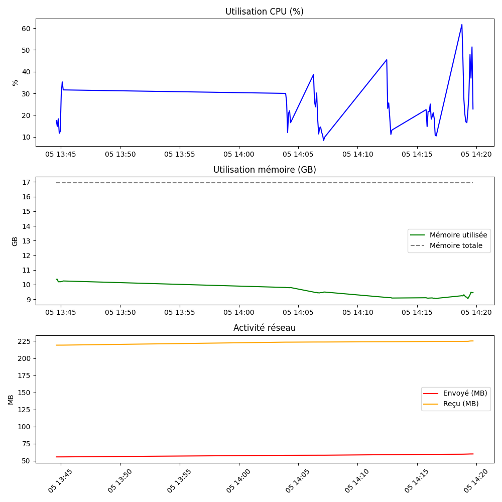

Mis à jour : 2025-06-05 14:16:41
=== CPU Usage ===
Core 0: [#####---------------] 29.0%
Core 1: [#####---------------] 28.8%
Core 2: [#######-------------] 38.3%
Core 3: [####----------------] 22.0%
Core 4: [########------------] 44.3%
Core 5: [####----------------] 23.2%
Core 6: [######--------------] 34.5%
Core 7: [####----------------] 20.8%
Total: [######--------------] 30.2%
=== Memory ===
Total: 16.94 GB
Used: 9.08 GB
Free: 7.87 GB
=== Disk Usage ===
C:\ (C:\) - Total: 489.66 GB, Used: 63.79 GB, Free: 425.87 GB
=== Network I/O ===
Bytes Sent: 59.36 MB
Bytes Received: 224.55 MB
Packets Sent: 128495
Packets Received: 188604
=== Network per Interface ===
Connexion au réseau local* 1 - Sent: 0.00 MB, Received: 0.00 MB
Connexion au réseau local* 2 - Sent: 0.00 MB, Received: 0.00 MB
Wi-Fi - Sent: 59.36 MB, Received: 224.55 MB
Loopback Pseudo-Interface 1 - Sent: 0.00 MB, Received: 0.00 MB
Cellulaire - Sent: 0.00 MB, Received: 0.00 MB
Press Ctrl+C to exit...